# install.packages("MASS")
# install.packages("neuralnet")
# install.packages("clusterGeneration")
# install.packages("devtools")
# install.packages("caTools")
# install.packages("reshape")
# install.packages("Metrics")
# install.packages("nnet")
#install.packages("plyr")
#install.packages("boot")5 Нейронні мережі. Регресія. Вартість житла
Курс: “Математичне моделювання в R”
У цій лекції ми скористаємося набором даних Boston: вартість житла у пригородах Бостона
5.1 Dataset description
medv is TARGET!
library(MASS)
?Boston| Boston {MASS} | R Documentation |
Housing Values in Suburbs of Boston
Description
The Boston data frame has 506 rows and 14 columns.
Usage
Boston
Format
This data frame contains the following columns:
crim-
per capita crime rate by town.
zn-
proportion of residential land zoned for lots over 25,000 sq.ft.
indus-
proportion of non-retail business acres per town.
chas-
Charles River dummy variable (= 1 if tract bounds river; 0 otherwise).
nox-
nitrogen oxides concentration (parts per 10 million).
rm-
average number of rooms per dwelling.
age-
proportion of owner-occupied units built prior to 1940.
dis-
weighted mean of distances to five Boston employment centres.
rad-
index of accessibility to radial highways.
tax-
full-value property-tax rate per $10,000.
ptratio-
pupil-teacher ratio by town.
black-
1000(Bk - 0.63)^2 where Bk is the proportion of blacks by town.
lstat-
lower status of the population (percent).
medv-
median value of owner-occupied homes in $1000s.
Source
Harrison, D. and Rubinfeld, D.L. (1978) Hedonic prices and the demand for clean air. J. Environ. Economics and Management 5, 81–102.
Belsley D.A., Kuh, E. and Welsch, R.E. (1980) Regression Diagnostics. Identifying Influential Data and Sources of Collinearity. New York: Wiley.
[Package MASS version 7.3-58.1 ]
Переглянемо дані:
head(Boston)| crim | zn | indus | chas | nox | rm | age | dis | rad | tax | ptratio | black | lstat | medv | |
|---|---|---|---|---|---|---|---|---|---|---|---|---|---|---|
| <dbl> | <dbl> | <dbl> | <int> | <dbl> | <dbl> | <dbl> | <dbl> | <int> | <dbl> | <dbl> | <dbl> | <dbl> | <dbl> | |
| 1 | 0.00632 | 18 | 2.31 | 0 | 0.538 | 6.575 | 65.2 | 4.0900 | 1 | 296 | 15.3 | 396.90 | 4.98 | 24.0 |
| 2 | 0.02731 | 0 | 7.07 | 0 | 0.469 | 6.421 | 78.9 | 4.9671 | 2 | 242 | 17.8 | 396.90 | 9.14 | 21.6 |
| 3 | 0.02729 | 0 | 7.07 | 0 | 0.469 | 7.185 | 61.1 | 4.9671 | 2 | 242 | 17.8 | 392.83 | 4.03 | 34.7 |
| 4 | 0.03237 | 0 | 2.18 | 0 | 0.458 | 6.998 | 45.8 | 6.0622 | 3 | 222 | 18.7 | 394.63 | 2.94 | 33.4 |
| 5 | 0.06905 | 0 | 2.18 | 0 | 0.458 | 7.147 | 54.2 | 6.0622 | 3 | 222 | 18.7 | 396.90 | 5.33 | 36.2 |
| 6 | 0.02985 | 0 | 2.18 | 0 | 0.458 | 6.430 | 58.7 | 6.0622 | 3 | 222 | 18.7 | 394.12 | 5.21 | 28.7 |
str(Boston)'data.frame': 506 obs. of 14 variables:
$ crim : num 0.00632 0.02731 0.02729 0.03237 0.06905 ...
$ zn : num 18 0 0 0 0 0 12.5 12.5 12.5 12.5 ...
$ indus : num 2.31 7.07 7.07 2.18 2.18 2.18 7.87 7.87 7.87 7.87 ...
$ chas : int 0 0 0 0 0 0 0 0 0 0 ...
$ nox : num 0.538 0.469 0.469 0.458 0.458 0.458 0.524 0.524 0.524 0.524 ...
$ rm : num 6.58 6.42 7.18 7 7.15 ...
$ age : num 65.2 78.9 61.1 45.8 54.2 58.7 66.6 96.1 100 85.9 ...
$ dis : num 4.09 4.97 4.97 6.06 6.06 ...
$ rad : int 1 2 2 3 3 3 5 5 5 5 ...
$ tax : num 296 242 242 222 222 222 311 311 311 311 ...
$ ptratio: num 15.3 17.8 17.8 18.7 18.7 18.7 15.2 15.2 15.2 15.2 ...
$ black : num 397 397 393 395 397 ...
$ lstat : num 4.98 9.14 4.03 2.94 5.33 ...
$ medv : num 24 21.6 34.7 33.4 36.2 28.7 22.9 27.1 16.5 18.9 ...5.2 Data visualization
Lets move our dataset to special variable:
data <- Boston
head(data)| crim | zn | indus | chas | nox | rm | age | dis | rad | tax | ptratio | black | lstat | medv | |
|---|---|---|---|---|---|---|---|---|---|---|---|---|---|---|
| <dbl> | <dbl> | <dbl> | <int> | <dbl> | <dbl> | <dbl> | <dbl> | <int> | <dbl> | <dbl> | <dbl> | <dbl> | <dbl> | |
| 1 | 0.00632 | 18 | 2.31 | 0 | 0.538 | 6.575 | 65.2 | 4.0900 | 1 | 296 | 15.3 | 396.90 | 4.98 | 24.0 |
| 2 | 0.02731 | 0 | 7.07 | 0 | 0.469 | 6.421 | 78.9 | 4.9671 | 2 | 242 | 17.8 | 396.90 | 9.14 | 21.6 |
| 3 | 0.02729 | 0 | 7.07 | 0 | 0.469 | 7.185 | 61.1 | 4.9671 | 2 | 242 | 17.8 | 392.83 | 4.03 | 34.7 |
| 4 | 0.03237 | 0 | 2.18 | 0 | 0.458 | 6.998 | 45.8 | 6.0622 | 3 | 222 | 18.7 | 394.63 | 2.94 | 33.4 |
| 5 | 0.06905 | 0 | 2.18 | 0 | 0.458 | 7.147 | 54.2 | 6.0622 | 3 | 222 | 18.7 | 396.90 | 5.33 | 36.2 |
| 6 | 0.02985 | 0 | 2.18 | 0 | 0.458 | 6.430 | 58.7 | 6.0622 | 3 | 222 | 18.7 | 394.12 | 5.21 | 28.7 |
Let’s check a correlation between parameters:
suppressMessages(library(corrplot))
corrplot(cor(data))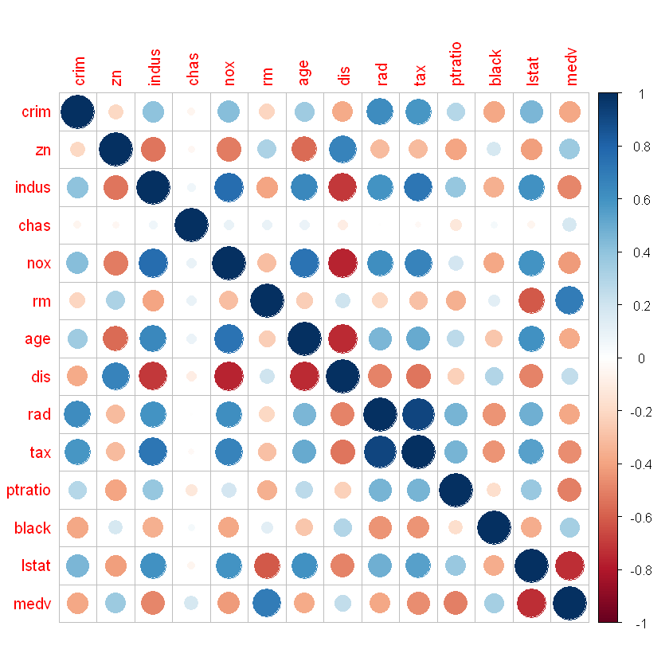
Rad and tax has highest correlation: 0.91
rad- index of accessibility to radial highways.tax- full-value property-tax rate per $10,000.
library(ggplot2)
ggplot(data, aes(medv)) +
geom_histogram(bins = 25, alpha = 0.5, fill = 'blue', color='black') +
theme_bw()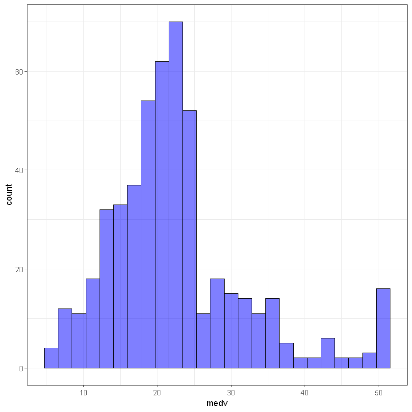
#crim
ggplot(data, aes(crim)) +
geom_histogram(bins = 25, alpha = 0.5, fill = 'blue', color='black') +
theme_bw()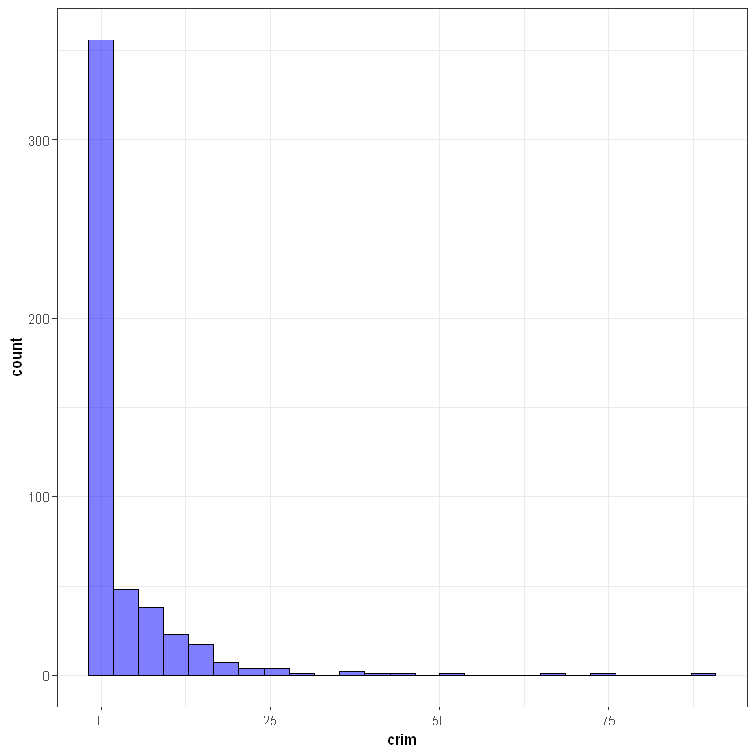
#zn
ggplot(data, aes(zn)) +
geom_histogram(bins = 25, alpha = 0.5, fill = 'blue', color='black') +
theme_bw()
#indus
ggplot(data, aes(indus)) +
geom_histogram(bins = 25, alpha = 0.5, fill = 'blue', color='black') +
theme_bw()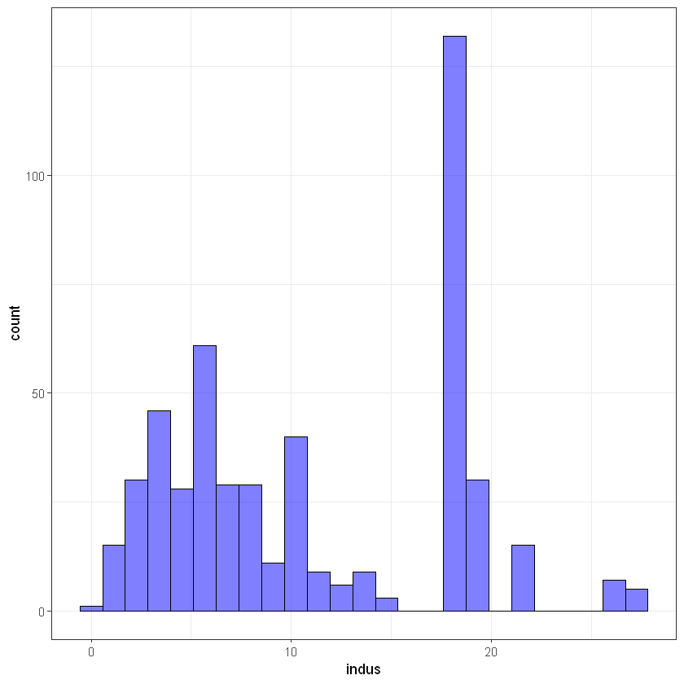
#chas
ggplot(data, aes(chas)) +
geom_bar(aes(fill = chas)) +
theme_bw()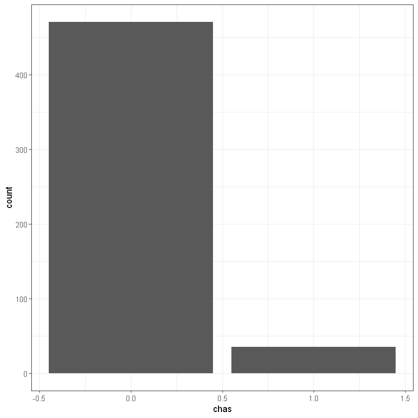
# nox
ggplot(data, aes(nox)) +
geom_histogram(bins = 10, alpha = 0.5, fill = 'blue', color='black') +
theme_bw()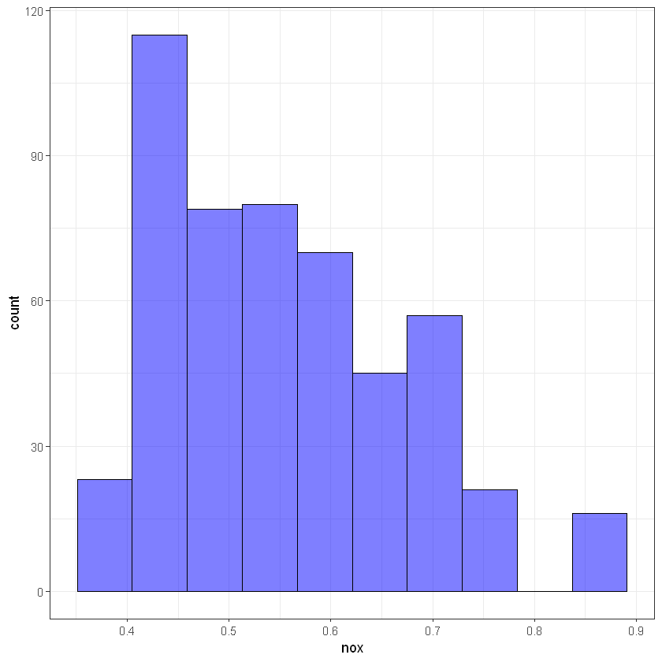
# rm
ggplot(data, aes(rm)) +
geom_histogram(bins = 10, alpha = 0.5, fill = 'blue', color='black') +
theme_bw()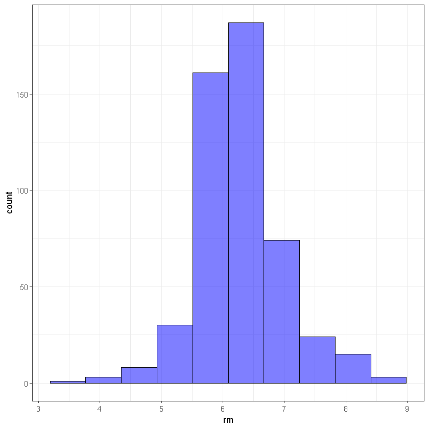
# age
ggplot(data, aes(age)) +
geom_histogram(bins = 15, alpha = 0.5, fill = 'blue', color='black') +
theme_bw()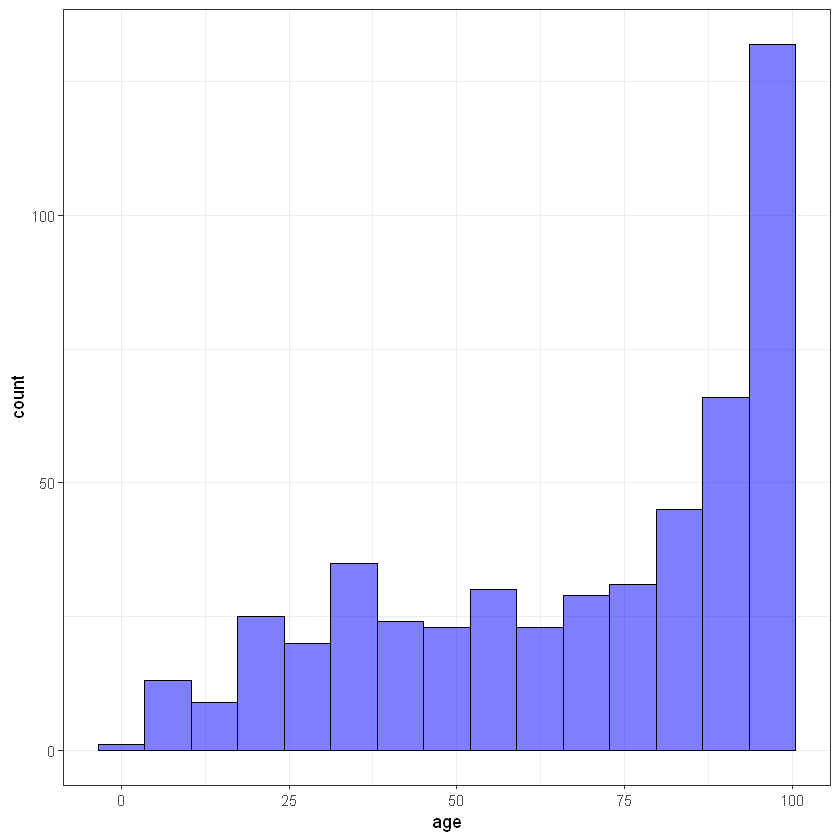
# dis
ggplot(data, aes(dis)) +
geom_histogram(bins = 15, alpha = 0.5, fill = 'blue', color='black') +
theme_bw()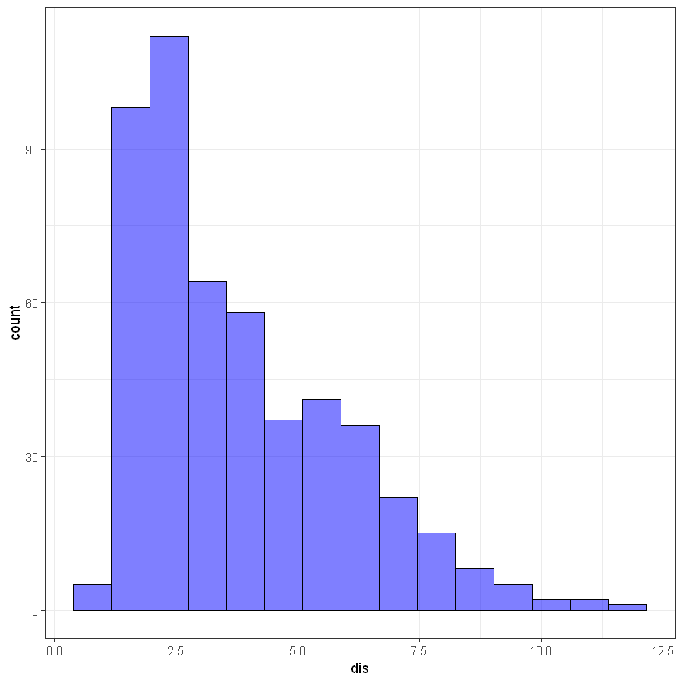
#rad
ggplot(data, aes(ptratio)) +
geom_histogram(bins = 10, alpha = 0.5, fill = 'blue', color='black') +
theme_bw()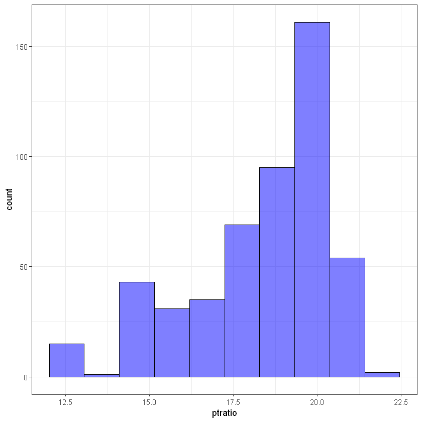
# black
ggplot(data, aes(black)) +
geom_histogram(bins = 10, alpha = 0.5, fill = 'blue', color='black') +
theme_bw()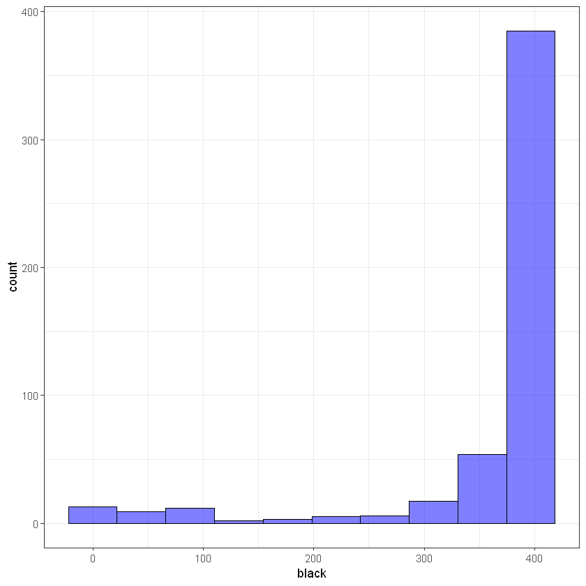
# lstat
ggplot(data, aes(lstat)) +
geom_histogram(bins = 25, alpha = 0.5, fill = 'blue', color='black') +
theme_bw()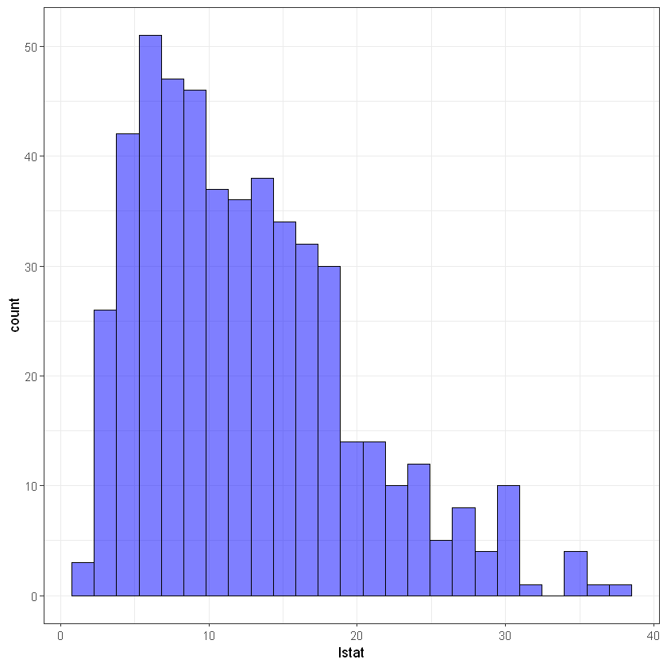
# nox
ggplot(data, aes(nox)) +
geom_histogram(bins = 25, alpha = 0.5, fill = 'blue', color='black') +
theme_bw()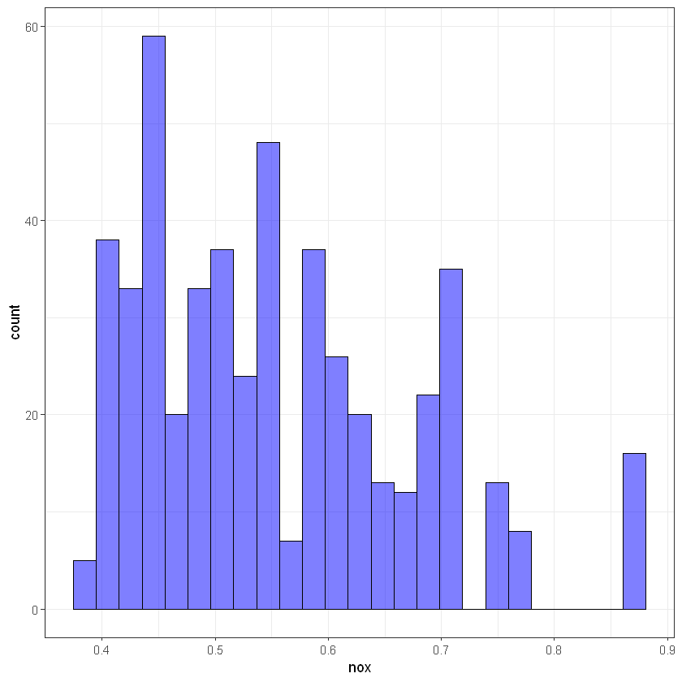
5.3 Data scaling
Для роботи з нейромережами хорошою практикою є нормалізація даних перед використанням. Скористаємося формулою \((X-Xmin)/(Xmax-Xmin)\).
Визначимо мінімальні та максимальні значення по факторах:
suppressMessages(library(dplyr))normalizeData <- function(x) {
return ((x - min(x)) / (max(x) - min(x)))
}revertData <- function(scaled, original) {
return (scaled * (max(original) - min(original)) + min(original))
}data %>% head()| crim | zn | indus | chas | nox | rm | age | dis | rad | tax | ptratio | black | lstat | medv | |
|---|---|---|---|---|---|---|---|---|---|---|---|---|---|---|
| <dbl> | <dbl> | <dbl> | <int> | <dbl> | <dbl> | <dbl> | <dbl> | <int> | <dbl> | <dbl> | <dbl> | <dbl> | <dbl> | |
| 1 | 0.00632 | 18 | 2.31 | 0 | 0.538 | 6.575 | 65.2 | 4.0900 | 1 | 296 | 15.3 | 396.90 | 4.98 | 24.0 |
| 2 | 0.02731 | 0 | 7.07 | 0 | 0.469 | 6.421 | 78.9 | 4.9671 | 2 | 242 | 17.8 | 396.90 | 9.14 | 21.6 |
| 3 | 0.02729 | 0 | 7.07 | 0 | 0.469 | 7.185 | 61.1 | 4.9671 | 2 | 242 | 17.8 | 392.83 | 4.03 | 34.7 |
| 4 | 0.03237 | 0 | 2.18 | 0 | 0.458 | 6.998 | 45.8 | 6.0622 | 3 | 222 | 18.7 | 394.63 | 2.94 | 33.4 |
| 5 | 0.06905 | 0 | 2.18 | 0 | 0.458 | 7.147 | 54.2 | 6.0622 | 3 | 222 | 18.7 | 396.90 | 5.33 | 36.2 |
| 6 | 0.02985 | 0 | 2.18 | 0 | 0.458 | 6.430 | 58.7 | 6.0622 | 3 | 222 | 18.7 | 394.12 | 5.21 | 28.7 |
Нормалізуємо значення за один раз у всьому датафреймі.
Переглянемо як змінився вигляд значень:
scaled_data <- sapply(X = data, FUN = normalizeData) %>% as.data.frame()
scaled_data %>% head()| crim | zn | indus | chas | nox | rm | age | dis | rad | tax | ptratio | black | lstat | medv | |
|---|---|---|---|---|---|---|---|---|---|---|---|---|---|---|
| <dbl> | <dbl> | <dbl> | <dbl> | <dbl> | <dbl> | <dbl> | <dbl> | <dbl> | <dbl> | <dbl> | <dbl> | <dbl> | <dbl> | |
| 1 | 0.0000000000 | 0.18 | 0.06781525 | 0 | 0.3148148 | 0.5775053 | 0.6416066 | 0.2692031 | 0.00000000 | 0.20801527 | 0.2872340 | 1.0000000 | 0.08967991 | 0.4222222 |
| 2 | 0.0002359225 | 0.00 | 0.24230205 | 0 | 0.1728395 | 0.5479977 | 0.7826982 | 0.3489620 | 0.04347826 | 0.10496183 | 0.5531915 | 1.0000000 | 0.20447020 | 0.3688889 |
| 3 | 0.0002356977 | 0.00 | 0.24230205 | 0 | 0.1728395 | 0.6943859 | 0.5993821 | 0.3489620 | 0.04347826 | 0.10496183 | 0.5531915 | 0.9897373 | 0.06346578 | 0.6600000 |
| 4 | 0.0002927957 | 0.00 | 0.06304985 | 0 | 0.1502058 | 0.6585553 | 0.4418126 | 0.4485446 | 0.08695652 | 0.06679389 | 0.6489362 | 0.9942761 | 0.03338852 | 0.6311111 |
| 5 | 0.0007050701 | 0.00 | 0.06304985 | 0 | 0.1502058 | 0.6871048 | 0.5283213 | 0.4485446 | 0.08695652 | 0.06679389 | 0.6489362 | 1.0000000 | 0.09933775 | 0.6933333 |
| 6 | 0.0002644715 | 0.00 | 0.06304985 | 0 | 0.1502058 | 0.5497222 | 0.5746653 | 0.4485446 | 0.08695652 | 0.06679389 | 0.6489362 | 0.9929901 | 0.09602649 | 0.5266667 |
re_data <- sapply(X = scaled_data$medv, original = data$medv, FUN = revertData) %>% as.data.frame()
re_data %>% head()| . | |
|---|---|
| <dbl> | |
| 1 | 24.0 |
| 2 | 21.6 |
| 3 | 34.7 |
| 4 | 33.4 |
| 5 | 36.2 |
| 6 | 28.7 |
5.4 Train/test split
Сформуємо вибірки з пропорцією 70/30 % значень:
library(caTools)
set.seed(2023)
split <- sample.split(scaled_data$medv, SplitRatio = 0.7)
train_data <- subset(scaled_data, split)
test_data <- subset(scaled_data, !split)Let’s check how target’s are distrubuted in both samples:
# train
ggplot(train_data, aes(medv)) +
geom_histogram(bins = 25, alpha = 0.5, fill = 'blue', color='black') +
theme_bw()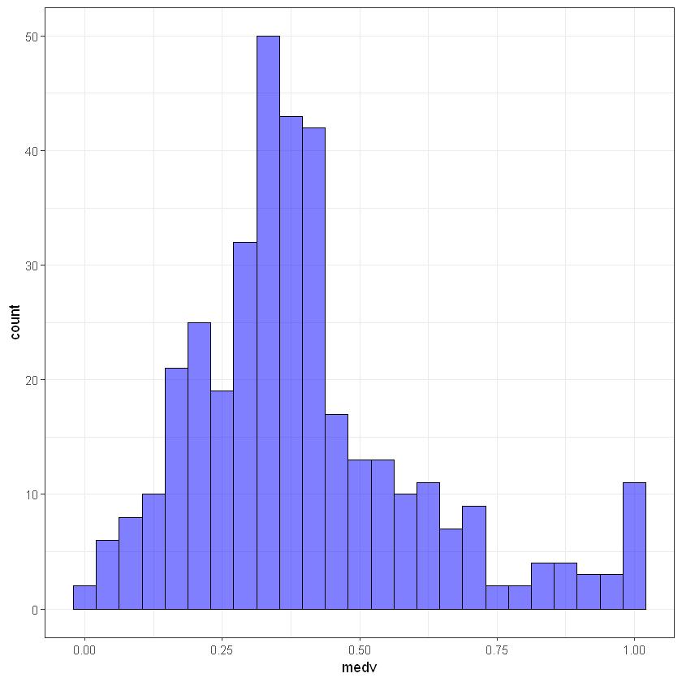
# test
ggplot(test_data, aes(medv)) +
geom_histogram(bins = 25, alpha = 0.5, fill = 'blue', color='black') +
theme_bw()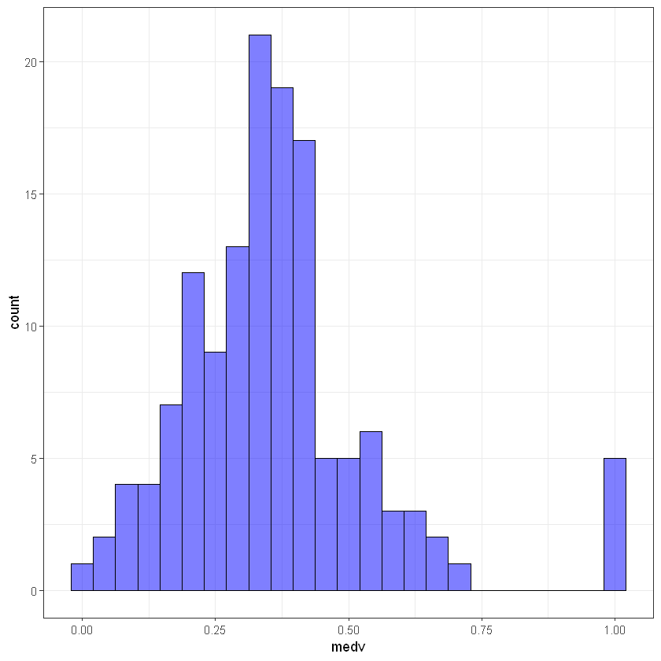
5.5 Baseline (Linear regression)
Для порівняння ефективності використання нейронних мереж скористаємося для початку лінійною регресією:
lm_model <- lm(medv ~ ., data = train_data)
summary(lm_model)
Call:
lm(formula = medv ~ ., data = train_data)
Residuals:
Min 1Q Median 3Q Max
-0.24556 -0.06405 -0.01292 0.04494 0.59898
Coefficients:
Estimate Std. Error t value Pr(>|t|)
(Intercept) 0.49370 0.06281 7.860 4.70e-14 ***
crim -0.14725 0.15139 -0.973 0.331410
zn 0.08336 0.03588 2.323 0.020751 *
indus 0.01499 0.04469 0.335 0.737541
chas 0.01520 0.02281 0.667 0.505425
nox -0.18674 0.05028 -3.714 0.000237 ***
rm 0.48617 0.05571 8.727 < 2e-16 ***
age -0.01314 0.03207 -0.410 0.682344
dis -0.36140 0.05961 -6.063 3.43e-09 ***
rad 0.14625 0.04369 3.347 0.000905 ***
tax -0.14304 0.05333 -2.682 0.007655 **
ptratio -0.21909 0.03199 -6.850 3.30e-11 ***
black 0.07181 0.02898 2.478 0.013692 *
lstat -0.41460 0.04909 -8.446 7.94e-16 ***
---
Signif. codes: 0 '***' 0.001 '**' 0.01 '*' 0.05 '.' 0.1 ' ' 1
Residual standard error: 0.1058 on 353 degrees of freedom
Multiple R-squared: 0.7566, Adjusted R-squared: 0.7477
F-statistic: 84.42 on 13 and 353 DF, p-value: < 2.2e-16Здійснимо прогноз тестових значень:
test_lm_predicted_scaled <- predict(lm_model, test_data)
head(test_lm_predicted_scaled)- 1
- 0.56792431740972
- 5
- 0.523111676025518
- 20
- 0.295073007902457
- 29
- 0.32360237024043
- 30
- 0.355931690861336
- 35
- 0.195998476728651
test_lm_predicted <- sapply(X = test_lm_predicted_scaled, original = data$medv, FUN = revertData) %>% as.data.frame()
head(test_lm_predicted)| . | |
|---|---|
| <dbl> | |
| 1 | 30.55659 |
| 5 | 28.54003 |
| 20 | 18.27829 |
| 29 | 19.56211 |
| 30 | 21.01693 |
| 35 | 13.81993 |
Let’s check errors and R^2:
library(modelr)
# need for next comparison
linear_err <- data.frame(
R2_train = round(modelr::rsquare(lm_model, data = train_data), 4),
R2_test = round(modelr::rsquare(lm_model, data = test_data), 4),
MSE_test = round(modelr::mse(lm_model, data = test_data), 4),
RMSE_test = round(modelr::rmse(lm_model, data = test_data), 4)
)
rownames(linear_err) <- c("linear")
linear_err| R2_train | R2_test | MSE_test | RMSE_test | |
|---|---|---|---|---|
| <dbl> | <dbl> | <dbl> | <dbl> | |
| linear | 0.7566 | 0.6611 | 0.0117 | 0.1081 |
5.6 Побудова нейромережі за допомогою neuralnet
Підключаємо пакет neuralnet:
suppressMessages(library(neuralnet))
Attaching package: 'neuralnet'
The following object is masked from 'package:dplyr':
compute
Для побудови моделі потрібно згенерувати формулу у форматі \(y ~ x_1 + x_2 + ... + x_n\)
n <- colnames(data)
n <- n[!n %in% "medv"]
formula <- as.formula(paste("medv ~", paste(n, collapse = " + ")))
formulamedv ~ crim + zn + indus + chas + nox + rm + age + dis + rad +
tax + ptratio + black + lstatБудуємо модель за допомогою фунуції neuralnet():
hidden = c(3,4) - перший прихований шар буде мати 3 нейрони, другий 4 linear.output - вихідний показник неперервне число. Не класифікація
nn_model <- neuralnet(formula = formula, data = train_data, hidden = c(3,4), linear.output = TRUE, rep = 1)Візуалізуємо модель:
plot(nn_model)train_data %>% head()| crim | zn | indus | chas | nox | rm | age | dis | rad | tax | ptratio | black | lstat | medv | |
|---|---|---|---|---|---|---|---|---|---|---|---|---|---|---|
| <dbl> | <dbl> | <dbl> | <dbl> | <dbl> | <dbl> | <dbl> | <dbl> | <dbl> | <dbl> | <dbl> | <dbl> | <dbl> | <dbl> | |
| 2 | 0.0002359225 | 0.000 | 0.24230205 | 0 | 0.1728395 | 0.5479977 | 0.7826982 | 0.3489620 | 0.04347826 | 0.10496183 | 0.5531915 | 1.0000000 | 0.20447020 | 0.3688889 |
| 3 | 0.0002356977 | 0.000 | 0.24230205 | 0 | 0.1728395 | 0.6943859 | 0.5993821 | 0.3489620 | 0.04347826 | 0.10496183 | 0.5531915 | 0.9897373 | 0.06346578 | 0.6600000 |
| 4 | 0.0002927957 | 0.000 | 0.06304985 | 0 | 0.1502058 | 0.6585553 | 0.4418126 | 0.4485446 | 0.08695652 | 0.06679389 | 0.6489362 | 0.9942761 | 0.03338852 | 0.6311111 |
| 6 | 0.0002644715 | 0.000 | 0.06304985 | 0 | 0.1502058 | 0.5497222 | 0.5746653 | 0.4485446 | 0.08695652 | 0.06679389 | 0.6489362 | 0.9929901 | 0.09602649 | 0.5266667 |
| 7 | 0.0009213230 | 0.125 | 0.27162757 | 0 | 0.2860082 | 0.4696302 | 0.6560247 | 0.4029226 | 0.17391304 | 0.23664122 | 0.2765957 | 0.9967220 | 0.29525386 | 0.3977778 |
| 8 | 0.0015536719 | 0.125 | 0.27162757 | 0 | 0.2860082 | 0.5002874 | 0.9598352 | 0.4383872 | 0.17391304 | 0.23664122 | 0.2765957 | 1.0000000 | 0.48068433 | 0.4911111 |
Також для візуалізація можна скористатися функцією plot.nnet(), опубілкованою на відкритому ресурсі одним із користувачів мережі Інтернет:
suppressMessages(library(devtools))library(clusterGeneration)suppressMessages(source_url('https://gist.githubusercontent.com/fawda123/7471137/raw/466c1474d0a505ff044412703516c34f1a4684a5/nnet_plot_update.r'))suppressMessages(plot.nnet(nn_model))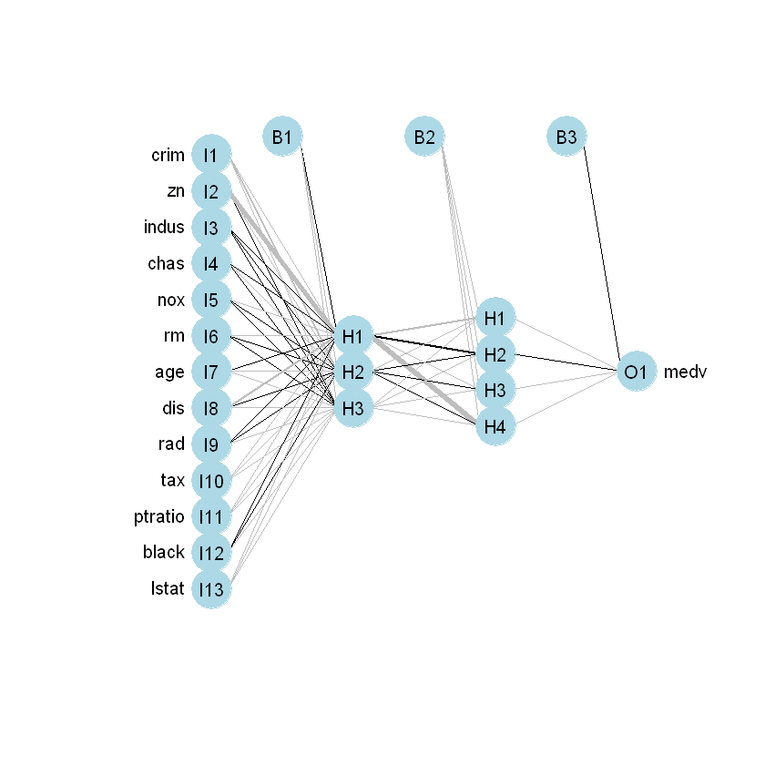
Preview neural network matrix as text:
nn_model$result.matrix %>% head()| error | 5.182582e-01 |
|---|---|
| reached.threshold | 9.322212e-03 |
| steps | 3.503000e+03 |
| Intercept.to.1layhid1 | 5.249092e-01 |
| crim.to.1layhid1 | -2.880638e+00 |
| zn.to.1layhid1 | -9.485175e+01 |
Здійснимо прогноз для тестової вибірки та повернемо значення до базового виміру:
test_predicted_scaled <- compute(nn_model, test_data%>%select(-medv))Convert $net.result to original form:
test_nn_predicted <- sapply(X = test_predicted_scaled$net.result, original = data$medv, FUN = revertData) %>% as.data.frame()
head(test_nn_predicted)| . | |
|---|---|
| <dbl> | |
| 1 | 28.74649 |
| 2 | 31.34932 |
| 3 | 18.86595 |
| 4 | 18.92882 |
| 5 | 19.89660 |
| 6 | 11.69719 |
Порівняємо похибки та \(R^2\) по лінійній регресії та першій нейронній мережі:
head(test_data)| crim | zn | indus | chas | nox | rm | age | dis | rad | tax | ptratio | black | lstat | medv | |
|---|---|---|---|---|---|---|---|---|---|---|---|---|---|---|
| <dbl> | <dbl> | <dbl> | <dbl> | <dbl> | <dbl> | <dbl> | <dbl> | <dbl> | <dbl> | <dbl> | <dbl> | <dbl> | <dbl> | |
| 1 | 0.0000000000 | 0.18 | 0.06781525 | 0 | 0.3148148 | 0.5775053 | 0.6416066 | 0.2692031 | 0.00000000 | 0.20801527 | 0.2872340 | 1.0000000 | 0.08967991 | 0.4222222 |
| 5 | 0.0007050701 | 0.00 | 0.06304985 | 0 | 0.1502058 | 0.6871048 | 0.5283213 | 0.4485446 | 0.08695652 | 0.06679389 | 0.6489362 | 1.0000000 | 0.09933775 | 0.6933333 |
| 20 | 0.0080867817 | 0.00 | 0.28152493 | 0 | 0.3148148 | 0.4150220 | 0.6858908 | 0.2425138 | 0.13043478 | 0.22900763 | 0.8936170 | 0.9849967 | 0.26352097 | 0.2933333 |
| 29 | 0.0086171860 | 0.00 | 0.28152493 | 0 | 0.3148148 | 0.5621767 | 0.9423275 | 0.3023670 | 0.13043478 | 0.22900763 | 0.8936170 | 0.9774068 | 0.30546358 | 0.2977778 |
| 30 | 0.0111962610 | 0.00 | 0.28152493 | 0 | 0.3148148 | 0.5964744 | 0.8692070 | 0.2827524 | 0.13043478 | 0.22900763 | 0.8936170 | 0.9579656 | 0.28283664 | 0.3555556 |
| 35 | 0.0180566727 | 0.00 | 0.28152493 | 0 | 0.3148148 | 0.4857252 | 0.9680742 | 0.2391765 | 0.13043478 | 0.22900763 | 0.8936170 | 0.6253215 | 0.51352097 | 0.1888889 |
suppressMessages(library(Metrics))library(Metrics) # for rmse function
neuralnet_err <- data.frame(
R2_train = round(cor(train_data$medv, nn_model$response[,"medv"])^2, 4),
R2_test = round(cor(test_data$medv, test_predicted_scaled$net.result)^2, 4),
MSE_test = round(mse(test_data$medv, test_predicted_scaled$net.result), 4),
RMSE_test = round(rmse(test_data$medv, test_predicted_scaled$net.result), 4)
)
rownames(neuralnet_err) <- "neuralnet"
linear_err |> bind_rows(neuralnet_err)
# Model is much better by all metrics but overfitted on train| R2_train | R2_test | MSE_test | RMSE_test | |
|---|---|---|---|---|
| <dbl> | <dbl> | <dbl> | <dbl> | |
| linear | 0.7566 | 0.6611 | 0.0117 | 0.1081 |
| neuralnet | 1.0000 | 0.7799 | 0.0077 | 0.0876 |
5.7 neuralnet + caret
suppressMessages(library(caret))ctrl<- trainControl(method="cv", number=1, search="random")
suppressMessages(nn2_model <- train(formula,
data = train_data,
trControl = ctrl,
metric = "RMSE",
method = "neuralnet"))
head(nn2_model)Warning message in cbind(intercept = 1, as.matrix(data[, model.list$variables])):
"number of rows of result is not a multiple of vector length (arg 1)"
Warning message in cbind(1, act.temp):
"number of rows of result is not a multiple of vector length (arg 1)"
Warning message in cbind(1, act.temp):
"number of rows of result is not a multiple of vector length (arg 1)"
Warning message in cbind(1, act.temp):
"number of rows of result is not a multiple of vector length (arg 1)"
Warning message in cbind(intercept = 1, as.matrix(data[, model.list$variables])):
"number of rows of result is not a multiple of vector length (arg 1)"
Warning message in cbind(1, act.temp):
"number of rows of result is not a multiple of vector length (arg 1)"
Warning message in cbind(1, act.temp):
"number of rows of result is not a multiple of vector length (arg 1)"
Warning message in cbind(1, act.temp):
"number of rows of result is not a multiple of vector length (arg 1)"
Warning message in cbind(intercept = 1, as.matrix(data[, model.list$variables])):
"number of rows of result is not a multiple of vector length (arg 1)"
Warning message in cbind(1, act.temp):
"number of rows of result is not a multiple of vector length (arg 1)"
Warning message in cbind(1, act.temp):
"number of rows of result is not a multiple of vector length (arg 1)"
Warning message in cbind(1, act.temp):
"number of rows of result is not a multiple of vector length (arg 1)"- $method
- 'neuralnet'
- $modelInfo
- $label
- 'Neural Network'
- $library
- 'neuralnet'
- $loop
- NULL
- $type
- 'Regression'
- $parameters
A data.frame: 3 × 3 parameter class label <chr> <chr> <chr> layer1 numeric #Hidden Units in Layer 1 layer2 numeric #Hidden Units in Layer 2 layer3 numeric #Hidden Units in Layer 3 - $grid
function (x, y, len = NULL, search = "grid") { if (search == "grid") { out <- expand.grid(layer1 = ((1:len) * 2) - 1, layer2 = 0, layer3 = 0) } else { out <- data.frame(layer1 = sample(2:20, replace = TRUE, size = len), layer2 = sample(c(0, 2:20), replace = TRUE, size = len), layer3 = sample(c(0, 2:20), replace = TRUE, size = len)) } out }- $fit
function (x, y, wts, param, lev, last, classProbs, ...) { colNames <- colnames(x) dat <- if (is.data.frame(x)) x else as.data.frame(x, stringsAsFactors = TRUE) dat$.outcome <- y form <- as.formula(paste(".outcome ~", paste(colNames, collapse = "+"))) if (param$layer1 == 0) stop("the first layer must have at least one hidden unit") if (param$layer2 == 0 & param$layer2 > 0) stop("the second layer must have at least one hidden unit if a third layer is specified") nodes <- c(param$layer1) if (param$layer2 > 0) { nodes <- c(nodes, param$layer2) if (param$layer3 > 0) nodes <- c(nodes, param$layer3) } neuralnet::neuralnet(form, data = dat, hidden = nodes, ...) }- $predict
function (modelFit, newdata, submodels = NULL) { newdata <- newdata[, modelFit$model.list$variables, drop = FALSE] neuralnet::compute(modelFit, covariate = newdata)$net.result[, 1] }- $prob
- NULL
- $tags
- 'Neural Network'
- $sort
function (x) x[order(x$layer1, x$layer2, x$layer3), ]
- $modelType
- 'Regression'
- $results
A data.frame: 3 × 9 layer1 layer2 layer3 RMSE Rsquared MAE RMSESD RsquaredSD MAESD <int> <dbl> <dbl> <dbl> <dbl> <dbl> <dbl> <dbl> <dbl> 1 4 2 15 4.317601 0.0009609744 4.312419 NA NA NA 2 11 7 10 2.110006 0.1077528131 2.098059 NA NA NA 3 15 6 7 2.774424 0.0840212438 2.766978 NA NA NA - $pred
- NULL
- $bestTune
A data.frame: 1 × 3 layer1 layer2 layer3 <int> <dbl> <dbl> 2 11 7 10
test_predicted_scaled <- predict(nn2_model, test_data%>%select(-medv))
head(test_predicted_scaled)
train_predicted_scaled <- predict(nn2_model, train_data%>%select(-medv))
head(train_predicted_scaled)- 1
- 0.487043261409714
- 5
- 0.621601182176565
- 20
- 0.296898662765632
- 29
- 0.311093959706198
- 30
- 0.358306907905892
- 35
- 0.207608926759425
- 2
- 0.404953900784053
- 3
- 0.631590265523993
- 4
- 0.616779701435411
- 6
- 0.485288600524427
- 7
- 0.344873486827333
- 8
- 0.321661962365258
test_nn2_predicted <- sapply(X = test_predicted_scaled, original = data$medv, FUN = revertData) %>% as.data.frame()
head(test_nn2_predicted)| . | |
|---|---|
| <dbl> | |
| 1 | 26.91695 |
| 5 | 32.97205 |
| 20 | 18.36044 |
| 29 | 18.99923 |
| 30 | 21.12381 |
| 35 | 14.34240 |
neuralnet2_err <- data.frame(
R2_train = round(cor(train_data$medv, train_predicted_scaled)^2, 4),
R2_test = round(cor(test_data$medv, test_predicted_scaled)^2, 4),
MSE_test = round(mse(test_data$medv, test_predicted_scaled), 4),
RMSE_test = round(rmse(test_data$medv, test_predicted_scaled), 4)
)
rownames(neuralnet2_err) <- "neuralnet_caret"
linear_err |> bind_rows(neuralnet_err) |> bind_rows(neuralnet2_err)| R2_train | R2_test | MSE_test | RMSE_test | |
|---|---|---|---|---|
| <dbl> | <dbl> | <dbl> | <dbl> | |
| linear | 0.7566 | 0.6611 | 0.0117 | 0.1081 |
| neuralnet | 1.0000 | 0.7799 | 0.0077 | 0.0876 |
| neuralnet_caret | 0.9767 | 0.8251 | 0.0063 | 0.0793 |
5.8 Neural network with nnet
Підключаємо пакет nnet для побудови нейромережі із 2-ма прихованими шарами, для прикладу.
library(nnet)Будуємо модель на основі формули створеної для попередньої моделі:
size- кількість нейронів у прихованому шарі
nnet_model <- nnet(formula, data = train_data, size = 2, maxit = 100)
# Не забудьте поекспериментувати зі зміною кількості вузлівYour code contains a unicode char which cannot be displayed in your
current locale and R will silently convert it to an escaped form when the
R kernel executes this code. This can lead to subtle errors if you use
such chars to do comparisons. For more information, please see
https://github.com/IRkernel/repr/wiki/Problems-with-unicode-on-windows# weights: 31
initial value 17.172411
iter 10 value 3.798860
iter 20 value 2.477108
iter 30 value 2.048115
iter 40 value 1.889895
iter 50 value 1.692867
iter 60 value 1.452958
iter 70 value 1.436145
iter 80 value 1.420405
iter 90 value 1.398269
iter 100 value 1.390185
final value 1.390185
stopped after 100 iterationssummary(nnet_model)a 13-2-1 network with 31 weights
options were -
b->h1 i1->h1 i2->h1 i3->h1 i4->h1 i5->h1 i6->h1 i7->h1 i8->h1 i9->h1
3.21 11.13 0.13 0.14 -0.03 -0.12 -2.78 0.39 0.45 -0.59
i10->h1 i11->h1 i12->h1 i13->h1
0.46 0.36 -0.51 0.46
b->h2 i1->h2 i2->h2 i3->h2 i4->h2 i5->h2 i6->h2 i7->h2 i8->h2 i9->h2
-10.30 -2.70 14.50 3.19 0.10 -2.68 1.65 7.43 -14.01 0.98
i10->h2 i11->h2 i12->h2 i13->h2
8.10 -2.17 -1.77 -14.95
b->o h1->o h2->o
10.26 -12.12 8.44 Візуалізуємо модель:
plot.nnet(nnet_model)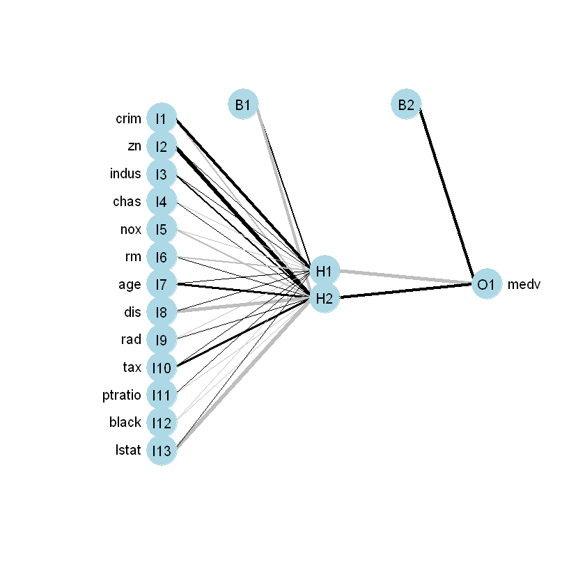
Здійснимо прогноз для тестової вибірки та повернемо значення до базового виміру:
test_predicted_scaled <- predict(nnet_model, test_data)
head(test_predicted_scaled)
test_nnet_predicted <- sapply(X = test_predicted_scaled, original = data$medv, FUN = revertData) %>% as.data.frame()| 1 | 0.5002897 |
|---|---|
| 5 | 0.6030015 |
| 20 | 0.2798733 |
| 29 | 0.3302058 |
| 30 | 0.3558518 |
| 35 | 0.2345779 |
nnet_modela 13-2-1 network with 31 weights
inputs: crim zn indus chas nox rm age dis rad tax ptratio black lstat
output(s): medv
options were -Порівняємо похибки по лінійній регресії та нейронних мереж:
nnet_err <- data.frame(
R2_train = round(cor(train_data$medv, predict(nnet_model, new=train_data))^2, 4),
R2_test = round(cor(test_data$medv, test_predicted_scaled)^2, 4),
MSE_test = round(mse(test_data$medv, test_predicted_scaled), 4),
RMSE_test = round(rmse(test_data$medv, test_predicted_scaled), 4)
)
rownames(nnet_err) <- "nnet"
linear_err |> bind_rows(neuralnet_err) |> bind_rows(neuralnet2_err) |> bind_rows(nnet_err)
# neuralnet wins! but remember it has more layers| R2_train | R2_test | MSE_test | RMSE_test | |
|---|---|---|---|---|
| <dbl> | <dbl> | <dbl> | <dbl> | |
| linear | 0.7566 | 0.6611 | 0.0117 | 0.1081 |
| neuralnet | 1.0000 | 0.7799 | 0.0077 | 0.0876 |
| neuralnet_caret | 0.9767 | 0.8251 | 0.0063 | 0.0793 |
| nnet | 0.9148 | 0.7276 | 0.0103 | 0.1013 |
5.9 Final models compare
Побудуємо графік розподілу пронозованих значень показників по усх моделях:
head(test_lm_predicted)
head(test_nn_predicted)
head(test_nnet_predicted)| . | |
|---|---|
| <dbl> | |
| 1 | 30.55659 |
| 5 | 28.54003 |
| 20 | 18.27829 |
| 29 | 19.56211 |
| 30 | 21.01693 |
| 35 | 13.81993 |
| . | |
|---|---|
| <dbl> | |
| 1 | 28.74649 |
| 2 | 31.34932 |
| 3 | 18.86595 |
| 4 | 18.92882 |
| 5 | 19.89660 |
| 6 | 11.69719 |
| . | |
|---|---|
| <dbl> | |
| 1 | 27.51304 |
| 2 | 32.13507 |
| 3 | 17.59430 |
| 4 | 19.85926 |
| 5 | 21.01333 |
| 6 | 15.55600 |
test_medv <- subset(data, !split) |> select(medv) |> unlist()
head(test_medv)- medv1
- 24
- medv2
- 36.2
- medv3
- 18.2
- medv4
- 18.4
- medv5
- 21
- medv6
- 13.5
head(test_data)| crim | zn | indus | chas | nox | rm | age | dis | rad | tax | ptratio | black | lstat | medv | |
|---|---|---|---|---|---|---|---|---|---|---|---|---|---|---|
| <dbl> | <dbl> | <dbl> | <dbl> | <dbl> | <dbl> | <dbl> | <dbl> | <dbl> | <dbl> | <dbl> | <dbl> | <dbl> | <dbl> | |
| 1 | 0.0000000000 | 0.18 | 0.06781525 | 0 | 0.3148148 | 0.5775053 | 0.6416066 | 0.2692031 | 0.00000000 | 0.20801527 | 0.2872340 | 1.0000000 | 0.08967991 | 0.4222222 |
| 5 | 0.0007050701 | 0.00 | 0.06304985 | 0 | 0.1502058 | 0.6871048 | 0.5283213 | 0.4485446 | 0.08695652 | 0.06679389 | 0.6489362 | 1.0000000 | 0.09933775 | 0.6933333 |
| 20 | 0.0080867817 | 0.00 | 0.28152493 | 0 | 0.3148148 | 0.4150220 | 0.6858908 | 0.2425138 | 0.13043478 | 0.22900763 | 0.8936170 | 0.9849967 | 0.26352097 | 0.2933333 |
| 29 | 0.0086171860 | 0.00 | 0.28152493 | 0 | 0.3148148 | 0.5621767 | 0.9423275 | 0.3023670 | 0.13043478 | 0.22900763 | 0.8936170 | 0.9774068 | 0.30546358 | 0.2977778 |
| 30 | 0.0111962610 | 0.00 | 0.28152493 | 0 | 0.3148148 | 0.5964744 | 0.8692070 | 0.2827524 | 0.13043478 | 0.22900763 | 0.8936170 | 0.9579656 | 0.28283664 | 0.3555556 |
| 35 | 0.0180566727 | 0.00 | 0.28152493 | 0 | 0.3148148 | 0.4857252 | 0.9680742 | 0.2391765 | 0.13043478 | 0.22900763 | 0.8936170 | 0.6253215 | 0.51352097 | 0.1888889 |
#Однакові межі для усіх графіків по Y
plot_ylim <- c(5,40)
par(mfrow=c(1,3)) # три стовпці, 1 рядок
# pch - тип точки для графіку
plot(test_medv, test_lm_predicted[,1], col='black', ylim=plot_ylim, main='Real vs predicted LM', pch=25, cex=0.7)
abline(0,1,lwd=2)
legend('bottomright',legend='LM',pch=25,col='black', bty='n')
plot(test_medv,test_nn_predicted[,1], col='red', ylim=plot_ylim, main='Real vs predicted NN',pch=18,cex=0.7)
abline(0,1,lwd=2)
legend('bottomright',legend='NN',pch=18,col='red', bty='n')
plot(test_medv,test_nnet_predicted[,1], col='blue', ylim=plot_ylim, main='Real vs predicted NNET',pch=18,cex=0.7)
abline(0,1,lwd=2)
legend('bottomright',legend='NNET',pch=18, col='black', bty='n')Your code contains a unicode char which cannot be displayed in your
current locale and R will silently convert it to an escaped form when the
R kernel executes this code. This can lead to subtle errors if you use
such chars to do comparisons. For more information, please see
https://github.com/IRkernel/repr/wiki/Problems-with-unicode-on-windows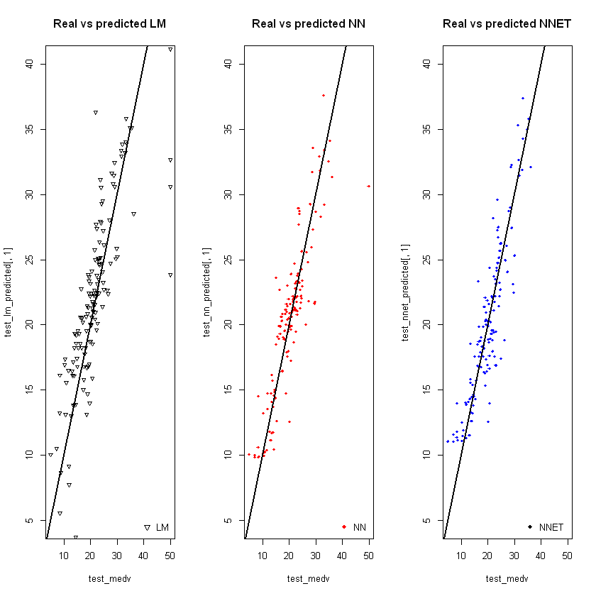
Combine all to one chart:
par(mfrow=c(1,1))
plot(test_medv,test_lm_predicted[,1],col='black',main='Real vs predicted NN + LM',pch=25,cex=0.7)
points(test_medv,test_nn_predicted[,1],col='red',pch=19,cex=0.7)
points(test_medv,test_nnet_predicted[,1],col='blue',pch=18,cex=0.7)
abline(0,1,lwd=2)
legend('bottomright',legend=c('lm','neuralnet','nnet'),pch=c(25,19,18),col=c('black', 'red','blue'))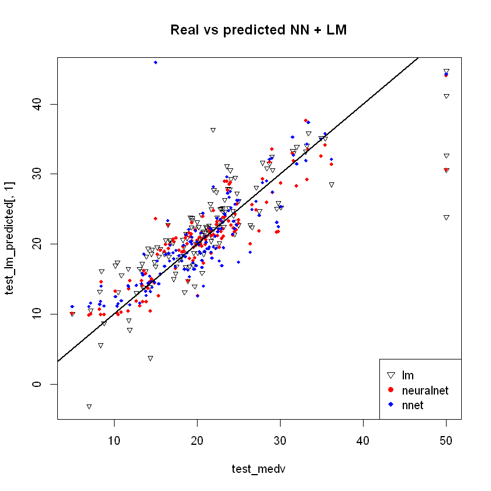
5.10 Валідація моделі на різних розмірах вибірки
suppressMessages(library(boot))
suppressMessages(library(plyr))
suppressMessages(library(DMwR))
set.seed(2023)
errors <- data.frame(TrainSize = c(1:90), RMSE1 = c(0), RMSE2 = c(0))
for(i in 1:10) {
for(j in 1:90){
split <- c(1:(nrow(scaled_data)*j/100))
train_data <- scaled_data[split,]
test_data <- scaled_data[-split,]
nnet_model <- nnet(formula, data = train_data, size = 3, maxit = 100, trace = F)
nnet_predicted_prob_scaled <- predict(nnet_model, test_data)
nnet_predicted <- nnet_predicted_prob_scaled * (max(data$medv) - min(data$medv)) + min(data$medv)
errors_list <- regr.eval(test_data$medv, nnet_predicted)
errors[errors$TrainSize == j, ]$RMSE1 <- errors[errors$TrainSize == j, ]$RMSE1 + errors_list[3]
}
}
Attaching package: 'boot'
The following object is masked from 'package:lattice':
melanoma
------------------------------------------------------------------------------
You have loaded plyr after dplyr - this is likely to cause problems.
If you need functions from both plyr and dplyr, please load plyr first, then dplyr:
library(plyr); library(dplyr)
------------------------------------------------------------------------------
Attaching package: 'plyr'
The following objects are masked from 'package:reshape':
rename, round_any
The following objects are masked from 'package:dplyr':
arrange, count, desc, failwith, id, mutate, rename, summarise,
summarize
Loading required package: grid
Registered S3 method overwritten by 'quantmod':
method from
as.zoo.data.frame zoo
Attaching package: 'DMwR'
The following object is masked from 'package:plyr':
join
The following object is masked from 'package:modelr':
bootstrap
errors$RMSE1 <- errors$RMSE1/10
plot (x = errors$TrainSize,
y = errors$RMSE1,
ylim = c(min(errors$RMSE1),
max(errors$RMSE1)),
type = "l",
xlab = "length of training set",
ylab = "mean RMSE",
main = "Variation of RMSE with length of training set")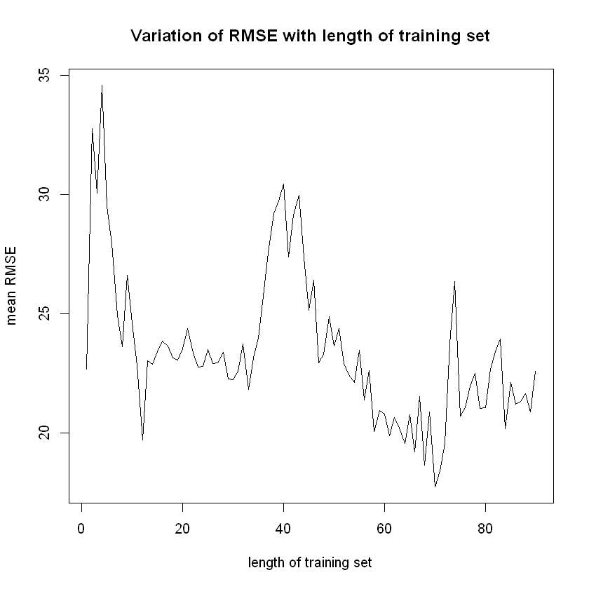
for(i in 1:10) {
for(j in 1:90){
split <- sample.split(scaled_data$medv, SplitRatio = j/100)
train_data <- subset(scaled_data, split == TRUE)
test_data <- subset(scaled_data, split == FALSE)
nnet_model <- nnet(formula, data = train_data, size = 3, maxit = 100, trace = F)
nnet_predicted_prob_scaled <- predict(nnet_model, test_data)
nnet_predicted <- nnet_predicted_prob_scaled * (max(data$medv) - min(data$medv)) + min(data$medv)
errors_list <- regr.eval(test_data$medv, nnet_predicted)
errors[errors$TrainSize == j, ]$RMSE2 <- errors[errors$TrainSize == j, ]$RMSE2 + errors_list[3]
}
}errors$RMSE2 <- errors$RMSE2/10
plot (x = errors$TrainSize,
y = errors$RMSE2,
ylim = c(min(errors$RMSE2),
max(errors$RMSE2)),
type = "l",
xlab = "length of training set",
ylab = "mean RMSE",
main = "Variation of RMSE with length of training set")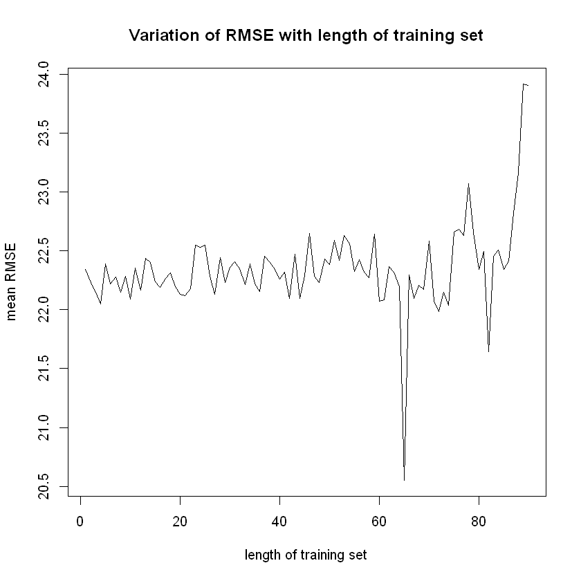
head(errors)| TrainSize | RMSE1 | RMSE2 | |
|---|---|---|---|
| <int> | <dbl> | <dbl> | |
| 1 | 1 | 22.65845 | 22.34442 |
| 2 | 2 | 32.76667 | 22.23155 |
| 3 | 3 | 30.06977 | 22.14714 |
| 4 | 4 | 34.59365 | 22.05084 |
| 5 | 5 | 29.49516 | 22.39201 |
| 6 | 6 | 27.93207 | 22.22010 |
require(caret)folds <- createFolds(scaled_data$medv, k = 10, list = TRUE, returnTrain = FALSE)
errors2 <- data.frame(FoldExcluded = c(1:10), RMSE = c(0))folds- $Fold01
-
- 16
- 20
- 21
- 39
- 46
- 47
- 48
- 56
- 69
- 91
- 120
- 127
- 132
- 143
- 151
- 186
- 187
- 191
- 196
- 227
- 231
- 236
- 239
- 252
- 258
- 259
- 279
- 280
- 289
- 314
- 320
- 335
- 337
- 350
- 352
- 360
- 372
- 373
- 380
- 385
- 392
- 409
- 415
- 419
- 420
- 431
- 439
- 445
- 452
- 468
- 484
- 486
- $Fold02
-
- 5
- 15
- 22
- 23
- 33
- 34
- 35
- 52
- 79
- 80
- 88
- 97
- 98
- 126
- 130
- 135
- 160
- 168
- 184
- 205
- 230
- 243
- 253
- 261
- 263
- 267
- 270
- 273
- 304
- 313
- 319
- 354
- 366
- 387
- 389
- 411
- 422
- 423
- 440
- 451
- 454
- 463
- 467
- 478
- 480
- 482
- 483
- 498
- 504
- $Fold03
-
- 4
- 17
- 26
- 38
- 53
- 70
- 71
- 82
- 86
- 100
- 104
- 128
- 133
- 134
- 141
- 147
- 201
- 208
- 209
- 212
- 214
- 217
- 224
- 246
- 269
- 274
- 305
- 325
- 326
- 332
- 341
- 348
- 353
- 355
- 356
- 362
- 365
- 369
- 370
- 377
- 382
- 390
- 400
- 404
- 407
- 408
- 417
- 418
- 470
- 495
- 501
- $Fold04
-
- 3
- 9
- 28
- 68
- 72
- 77
- 87
- 89
- 93
- 95
- 131
- 139
- 140
- 144
- 163
- 195
- 197
- 204
- 213
- 229
- 233
- 248
- 254
- 284
- 290
- 291
- 299
- 300
- 301
- 303
- 316
- 317
- 318
- 327
- 329
- 333
- 339
- 342
- 346
- 349
- 351
- 363
- 391
- 393
- 399
- 406
- 426
- 441
- 450
- 472
- 473
- 476
- $Fold05
-
- 55
- 76
- 85
- 94
- 113
- 117
- 118
- 125
- 142
- 156
- 157
- 159
- 167
- 170
- 172
- 179
- 189
- 190
- 192
- 194
- 203
- 221
- 240
- 262
- 272
- 285
- 286
- 310
- 324
- 330
- 338
- 344
- 358
- 368
- 371
- 388
- 414
- 425
- 427
- 429
- 434
- 449
- 459
- 475
- 493
- 497
- 500
- 503
- 505
- $Fold06
-
- 11
- 13
- 14
- 41
- 42
- 45
- 57
- 62
- 63
- 106
- 108
- 114
- 116
- 119
- 121
- 136
- 137
- 153
- 171
- 176
- 177
- 199
- 202
- 207
- 215
- 223
- 226
- 234
- 235
- 244
- 257
- 281
- 282
- 288
- 292
- 302
- 307
- 312
- 334
- 336
- 379
- 395
- 413
- 428
- 433
- 435
- 444
- 446
- 453
- 456
- 485
- $Fold07
-
- 1
- 7
- 10
- 12
- 27
- 30
- 40
- 58
- 60
- 73
- 74
- 78
- 81
- 83
- 92
- 96
- 152
- 154
- 158
- 162
- 169
- 206
- 210
- 216
- 218
- 237
- 242
- 245
- 249
- 260
- 266
- 276
- 293
- 295
- 311
- 321
- 345
- 347
- 357
- 378
- 383
- 386
- 405
- 424
- 438
- 447
- 448
- 455
- 457
- 458
- 460
- $Fold08
-
- 8
- 24
- 29
- 32
- 43
- 102
- 105
- 110
- 111
- 112
- 123
- 124
- 146
- 149
- 165
- 166
- 173
- 175
- 181
- 183
- 200
- 220
- 222
- 225
- 247
- 251
- 264
- 271
- 278
- 283
- 287
- 296
- 297
- 331
- 340
- 359
- 364
- 376
- 394
- 398
- 432
- 443
- 461
- 469
- 479
- 488
- 490
- 491
- 496
- 506
- $Fold09
-
- 6
- 18
- 19
- 25
- 36
- 50
- 54
- 59
- 61
- 66
- 90
- 99
- 103
- 107
- 109
- 155
- 161
- 164
- 174
- 178
- 180
- 182
- 198
- 211
- 219
- 250
- 265
- 275
- 306
- 328
- 361
- 367
- 375
- 381
- 384
- 396
- 397
- 402
- 403
- 412
- 416
- 437
- 442
- 464
- 465
- 466
- 471
- 477
- 481
- 502
- $Fold10
-
- 2
- 31
- 37
- 44
- 49
- 51
- 64
- 65
- 67
- 75
- 84
- 101
- 115
- 122
- 129
- 138
- 145
- 148
- 150
- 185
- 188
- 193
- 228
- 232
- 238
- 241
- 255
- 256
- 268
- 277
- 294
- 298
- 308
- 309
- 315
- 322
- 323
- 343
- 374
- 401
- 410
- 421
- 430
- 436
- 462
- 474
- 487
- 489
- 492
- 494
- 499
for(i in 1:10) {
for(j in 1:10){
train_data <- scaled_data[-folds[[j]], ]
test_data <- scaled_data[folds[[j]], ]
nnet_model <- nnet(formula, data = train_data, trace = F, size = 3, maxit = 100)
nnet_predicted_prob_scaled <- predict(nnet_model, test_data)
nnet_predicted <- nnet_predicted_prob_scaled * (max(data$medv) - min(data$medv)) + min(data$medv)
errors_list <- regr.eval(test_data$medv, nnet_predicted)
errors2[errors2$FoldExcluded == j, ]$RMSE <- errors2[errors2$FoldExcluded == j, ]$RMSE + errors_list[3]
}
}errors2$RMSE <- errors2$RMSE/10
plot (x = errors2$FoldExcluded, y = errors2$RMSE,
ylim = c(min(errors2$RMSE)-5,
max(errors2$RMSE)+5),
type = "l",
xlab = "length of training set",
ylab = "mean RMSE",
main = "Variation of RMSE with length of training set")
head(errors2)| FoldExcluded | RMSE | |
|---|---|---|
| <int> | <dbl> | |
| 1 | 1 | 23.88887 |
| 2 | 2 | 24.57703 |
| 3 | 3 | 24.03482 |
| 4 | 4 | 25.52928 |
| 5 | 5 | 24.05225 |
| 6 | 6 | 24.70978 |
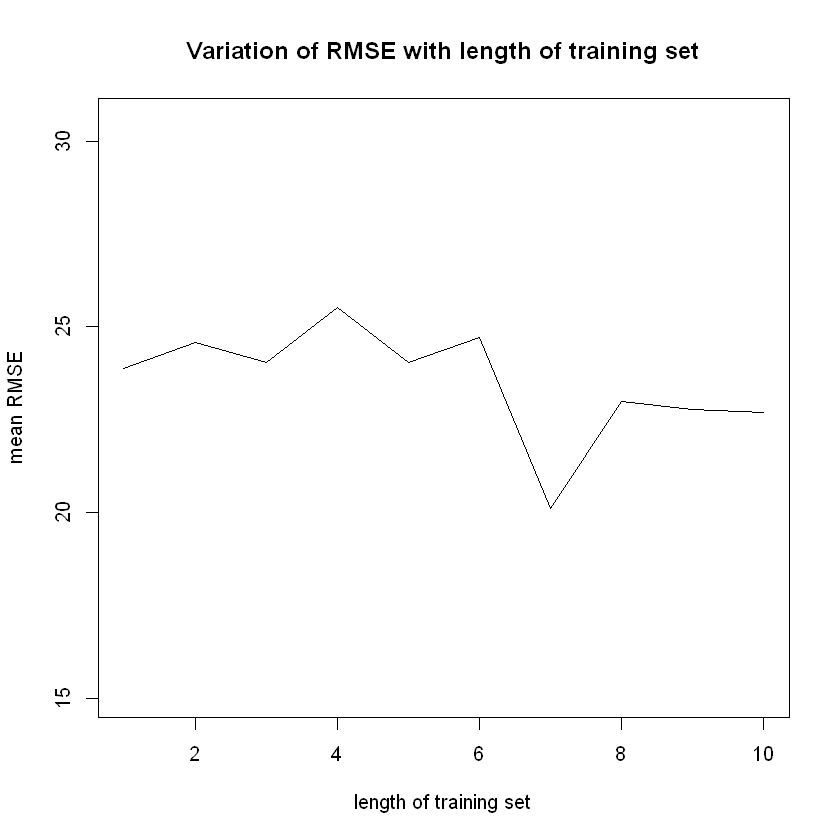
6 References
Harrison, D. and Rubinfeld, D.L. (1978) Hedonic prices and the demand for clean air. J. Environ. Economics and Management 5, 81–102.
Belsley D.A., Kuh, E. and Welsch, R.E. (1980) Regression Diagnostics. Identifying Influential Data and Sources of Collinearity. New York: Wiley.